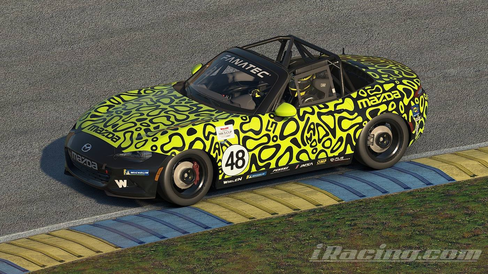
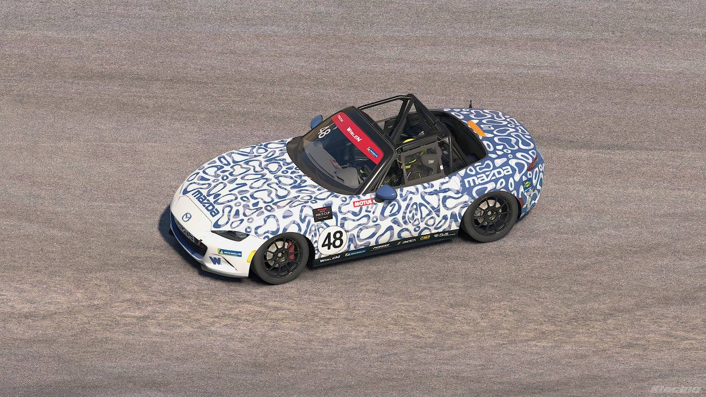
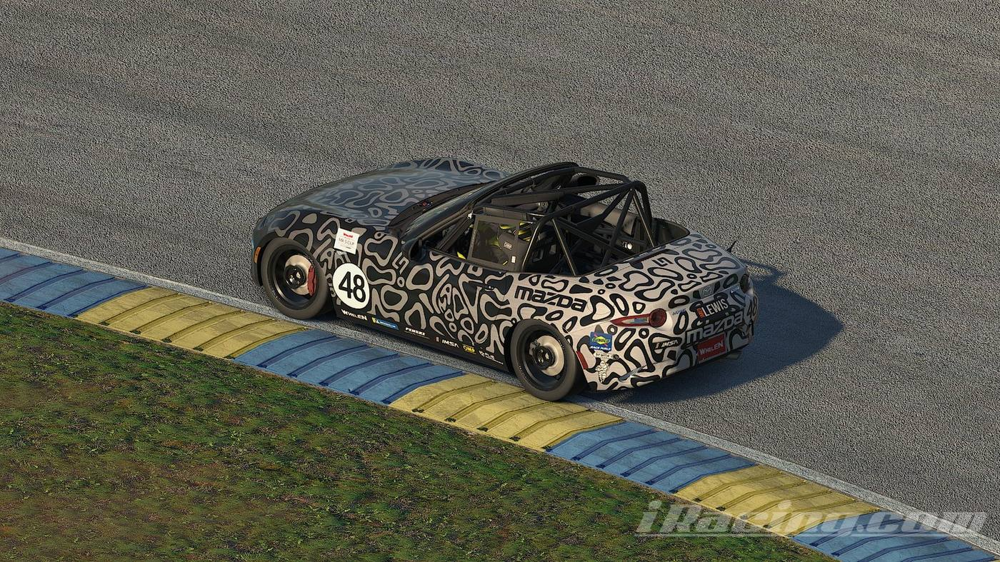
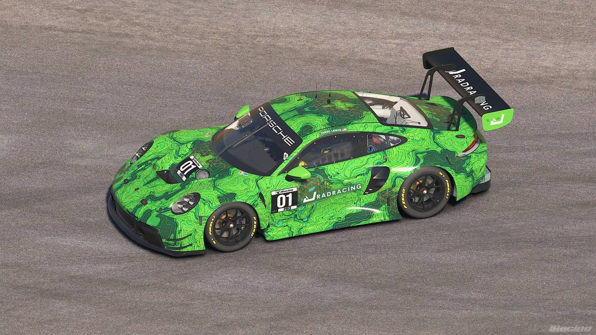
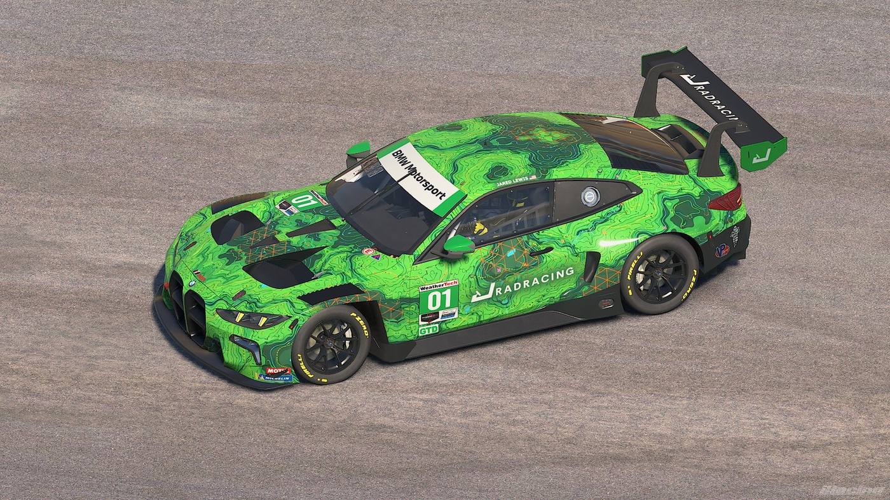

I race after
the day job.
JRAD Racing — MX-5 Cup and GT3 on iRacing. I'm on Twitch a couple nights a week for full races, and the best of it lands on YouTube for everyone who can't make the green flag live.
On track this week
Racing goes up 2–3 nights a week, shifted around a real job.
ALL TIMES PACIFIC — updated weekly
Tuesday
Wednesday
Thursday
Friday
New video
Weekend racing
The garage
Two series, two liveries. Both built around the same paint idea.
MX-5 Cup
Car #48
The neon build is the one you'll see most — high-contrast, easy to spot mid-pack, hard to miss in a photo finish. Alternate liveries below run the same shape in different colorways.


GT3
Car #01
GT3 nights run the green topo scheme across whatever the field calls for — Porsche 911 GT3 R or BMW M4 GT3, same #01, same paint language as the MX-5.

Live from the pit wall
Most recent upload — auto-pulled from YouTubeRecent uploads
Pulled straight from YouTube — no manual updates needed.
Join the crew
Every platform I actually post to — pick whichever you're already on.
Behind the wheel
I'm Jared — JRAD Racing is where the day job ends and the race weekend starts. iRacing's been the outlet for a while now: MX-5 Cup for the close, scrappy racing, GT3 for the longer, more technical stints.
The stream is the real thing — full sessions, mistakes included. YouTube is where the highlights, onboard clips, and setup breakdowns end up for anyone who'd rather watch the short version. Building this out one race week at a time.